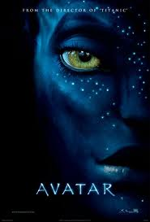

Sixteen year old Katniss Everdeen volunteers in her younger
sister's place to enter the games, and is forced to rely upon her
sharp instincts as well as the mentorship of drunken former victor
Haymitch Abernathy when she's pitted against highly-trained
Tributes who have prepared for these Games their entire lives.
If she's ever to return home to District 12, Katniss must make
impossible choices in the arena that weigh survival against
humanity and life against love.

Avatar is a 2009 American epic science fiction
film. The film is set in the mid-22nd century, when humans are
mining a precious mineral
called unobtanium on Pandora, a lush habitable moon of a gas
giant in the Alpha Centauri star system. The expansion
of the mining colony threatens the continued existence of a local
tribe of Na'vi.
The film's title refers to a genetically engineered Na'vi body
with the mind of a remotely located human, and is used to
interact with the natives of Pandora
